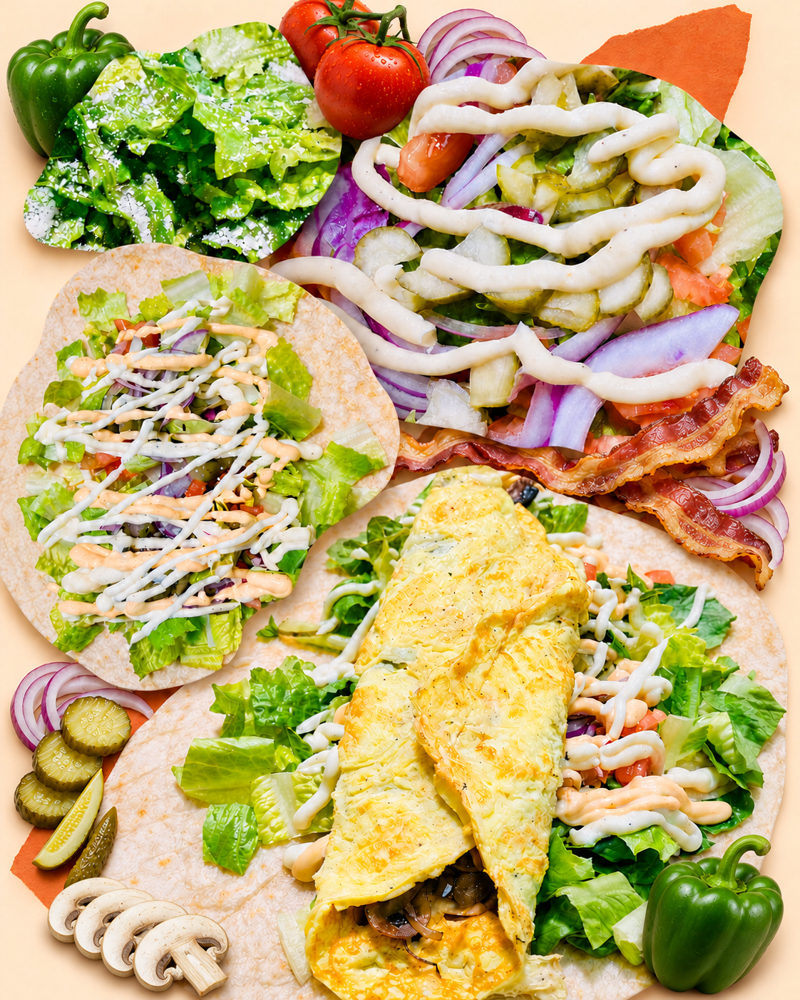
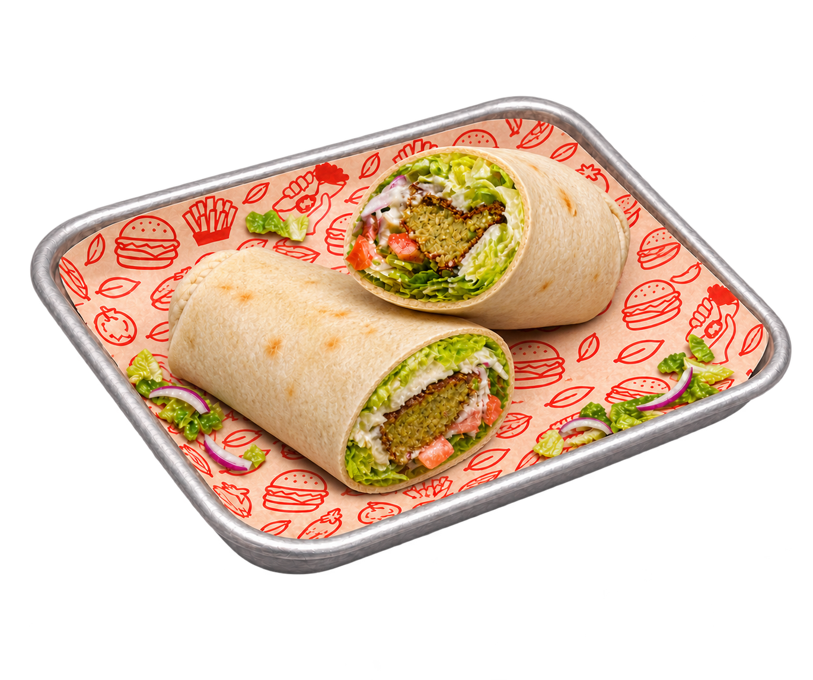
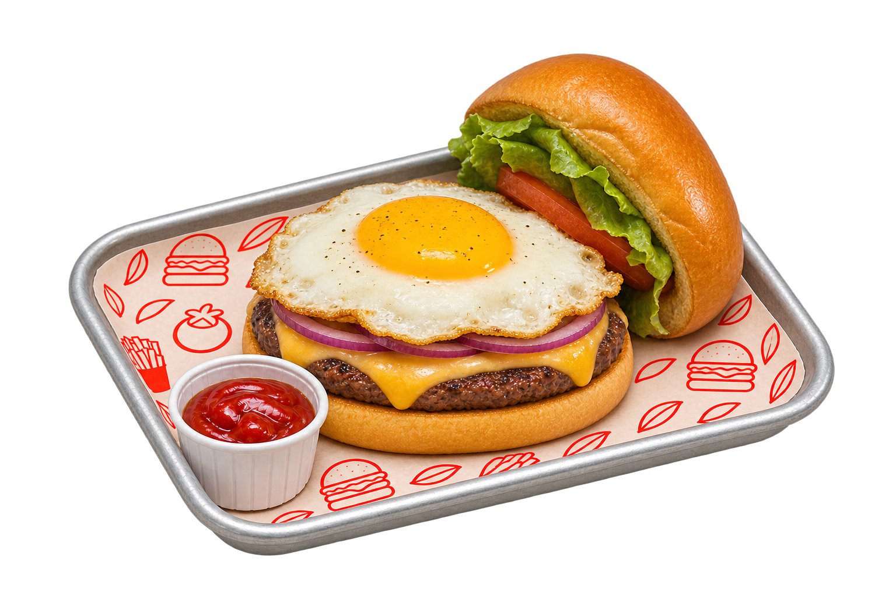
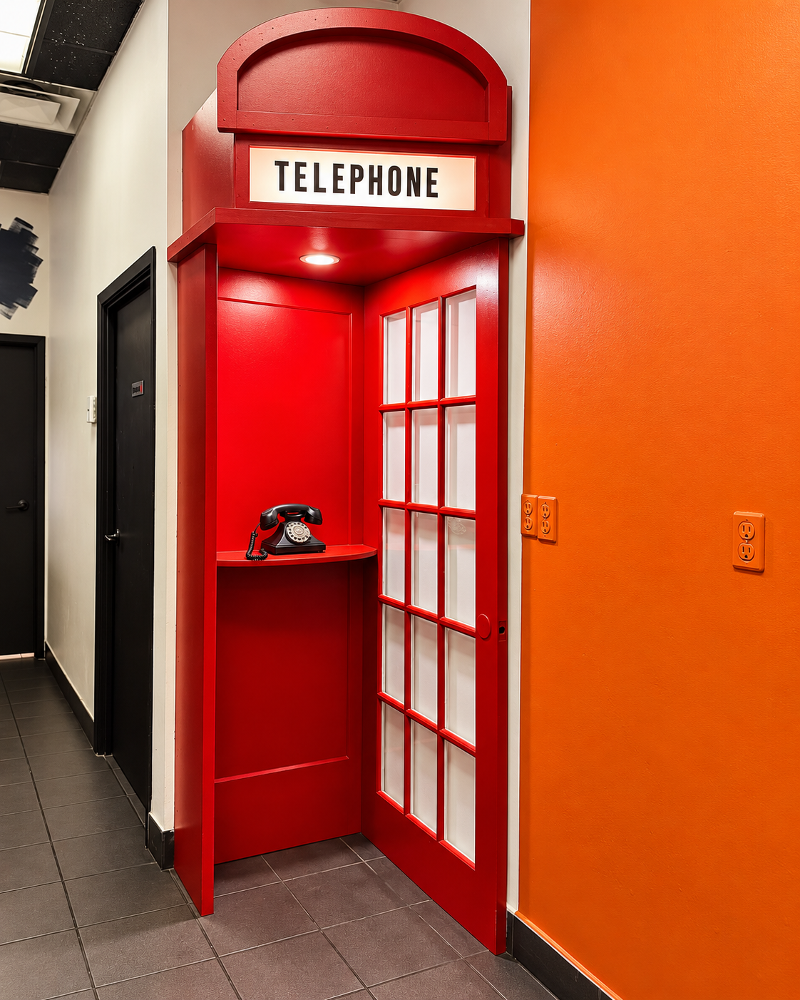
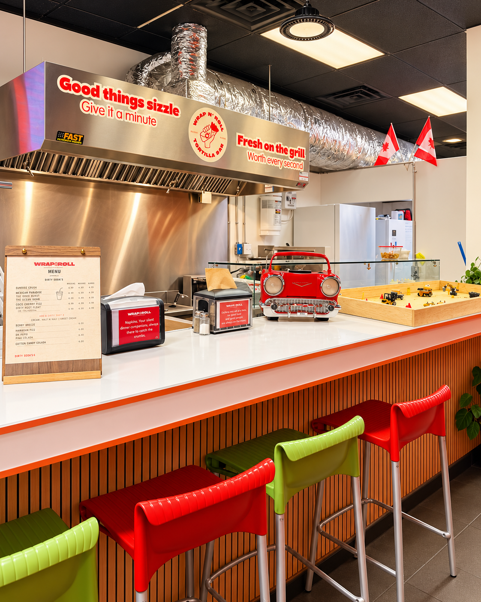
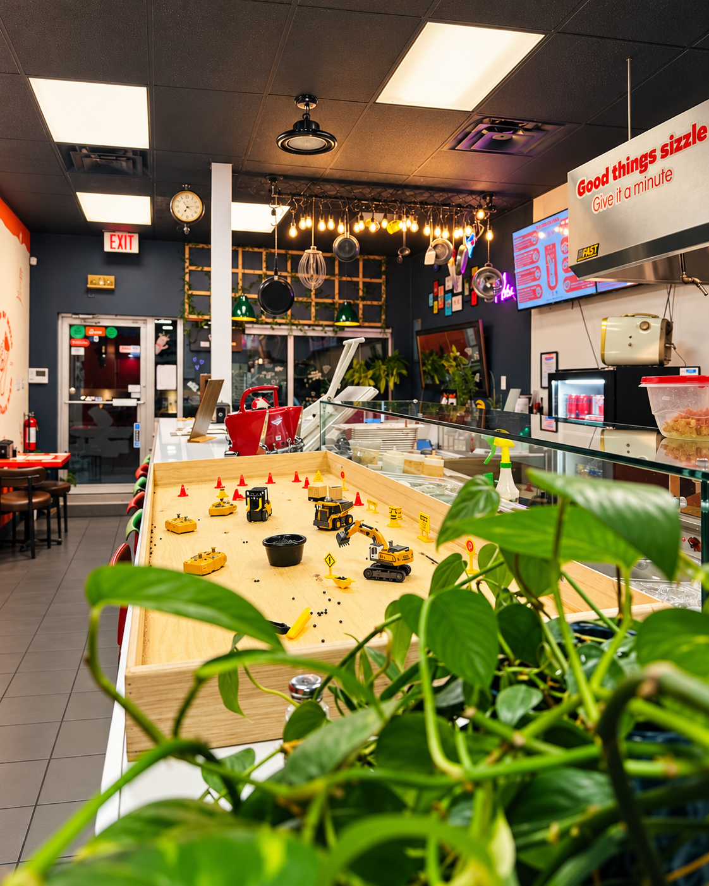
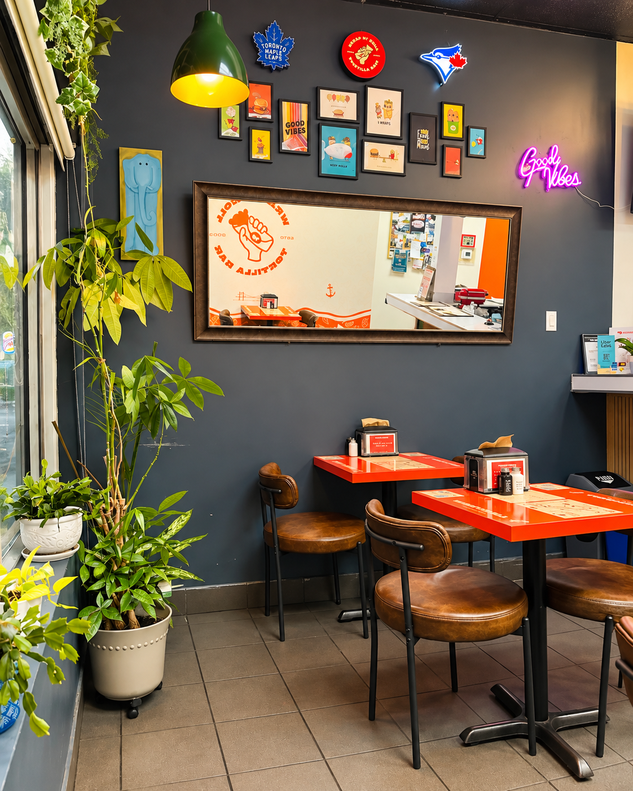

A little crunch. A little kick.Good things,
Good things,
wrapped together.
Soft, thin tortillas made in-house. Colourful fillings. A finishing drizzle that brings it all together.
From our House Veggie Wrap to a loaded Sackville Steak Wrap, there’s a little something for every kind of craving.
Make it your kind of good
Fresh layers.Big little moments.
Whatever your mood.We've got a bite for that.
Good food, rolled your way. From flavour-packed wraps and juicy burgers to our seasoned fries with house-made ketchup, we make every bite worth coming back for.



Lower Sackville, this one is for you.Come for wraps.
Come for wraps.
Stay for
everything.
A little different, a little unexpected, and very us! Great food, a red telephone booth, fun games and a welcoming spot right here in Lower Sackville.




A whole lot of flavour. All in good company.
Good things. Fresh fillings. That’s how we wrap.